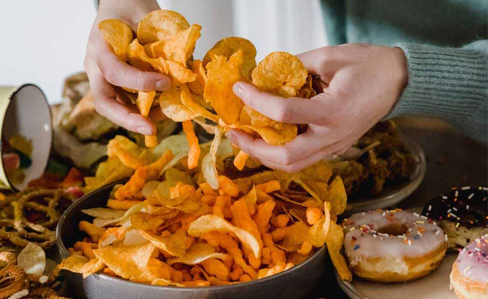
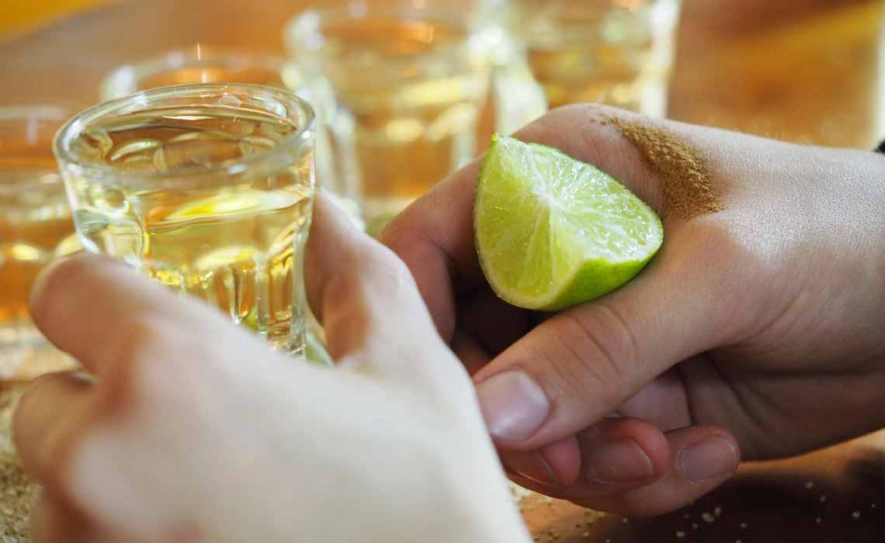
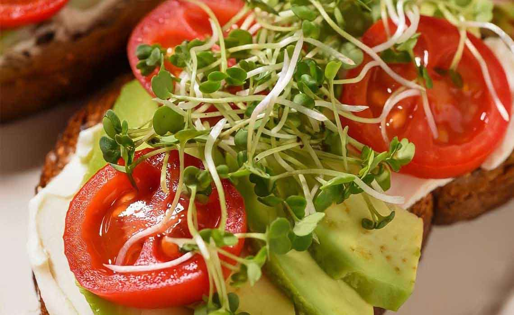

如何制定自己的減重計畫？常常有人問我明明工作日已經很努力控制飲食，幾個月後效果還是不明顯，甚至出現復胖。其實大多數人都忽視掉了「週末」這個幕後原因。一到週末早上睡過頭，白天暴飲暴食，晚上聊到深夜是很多人的現狀。說到「減重」，這樣子的飲食結構和作息方式顯然是錯誤的！今天就讓我來糾正一下各位。

首先「作弊日」並不適合每一個人，考慮到大家減肥的艱辛歷程，這一點完全可以理解，但是「作弊日」並不是適用於每一個人，尤其是對於已經制定好穩定減重計畫的人，很容易導致體重反彈複胖。
若剛好在假期期间，飲食可以吃任何種類，但是不能貪吃，每一次飲食最多吃七八分飽。並且假期一天中的最後一次飲食時間要在睡前的五小時。此外，每一次的飲食都要做到營養均衡，確保蛋白質和蔬菜攝入充足，每一餐中要有百分之五十以上的蔬菜，百分之三十以上的蛋白質類食物和不超過百分之二十的主食。減重期間的假期不是放棄減重，而是要確保減肥的持續進行和提高減肥的成功率。同時合理的減重假期還能增加心理健康和促進易瘦體質的形成。
接下來我給大家分享一下週末的減肥計劃，這個方法適用於絕大部分人，不同的人群可以針對自己的實際情況做適當的調整。
起床跳繩。時間選擇在30分鐘左右，當然也可以選擇跳夠300下數量。
"起床時間最好不要超過7點，跳繩的數量可以根據自己的體質決定，然後每隔一週加跳100下。跳完拍打腿部放鬆，重點拍打小腿，再壓腿拉拉筋，不然小腿肚子會變大。"
運動後喝杯水，最好是蜂蜜水，不要调的太浓。大概300~500毫升就好。

因為剛運動完，身體需要維持水和血糖穩定，蜂蜜水有助於肌肉處於理想的恢復狀態。 運動過後想維持較高的血糖水平，對肌肉的恢復至為重要，合理控制攝入的劑量就好。
7点左右吃早饭吃前吃一颗纤维豆子（帮助新陈代谢）这是科学饮食时间。
早餐是这样的：
如果吃不饱可以吃1-2个鸡蛋再就不能多了，记住是在减肥哦。
記住面包也一定是全麦的，不能吃其他的面包！还有就是你是什么体质，如果體質較好的話可以用苹果代替鸡蛋，因為考慮到部分人早上是不能吃生冷蔬菜和水果的，推薦服食维生素补充片。
11点半吃一碗水煮青菜，至少有100g的份量，可以用盐调味，但不能放其他調味品。如果不到十一点就饿了可以吃一个苹果或者西红柿或者黄瓜，最多只可以吃1个。

吃完午饭两小时后做幾組体操類似的運動，這個大家在網上已經可找到很多視頻，如果感覺到很難堅持的話，適當補充熱量，下午是很漫長的，可以適當補充作弊的食品，但一定要適量，推薦大家吃的時候服用Xenical「羅氏鮮」，幫助你有效減脂。
5点半可以吃晚饭了，建议还是吃水煮青菜，再適當慢慢减量，配上一塊100g的雞胸肉，攝入消耗的蛋白質，但不能忘記多喝水，每天饮水量最好不要低於2000ml。
8点去跑步！慢跑就好，时间至少20分钟。不喜欢跑步就快走，时间要1个小时。也可以選擇慢跑2千米，也许刚开始坚持不下来，但时间久了会爱上跑步的。
10点半以后睡觉，睡覺前不要吃任何東西，一天了很累躺下就睡了，也不会失眠，並且保證沒有想打開手機的衝動，第二天起床也會精力充沛。
最後建议一个月或至少2星期称一次体重，因为节食减肥刚开始体重会下降的快点但会有停滞期，继续坚持就好，减肥是很需要不斷堅持下去的，最後希望這篇文章對大家有幫助。